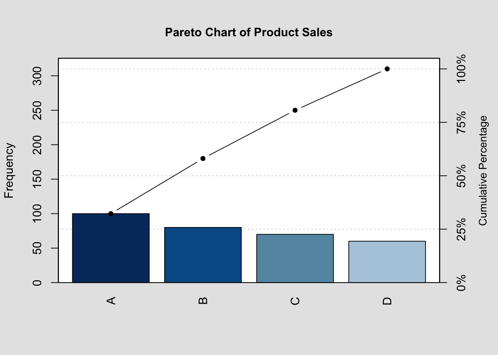
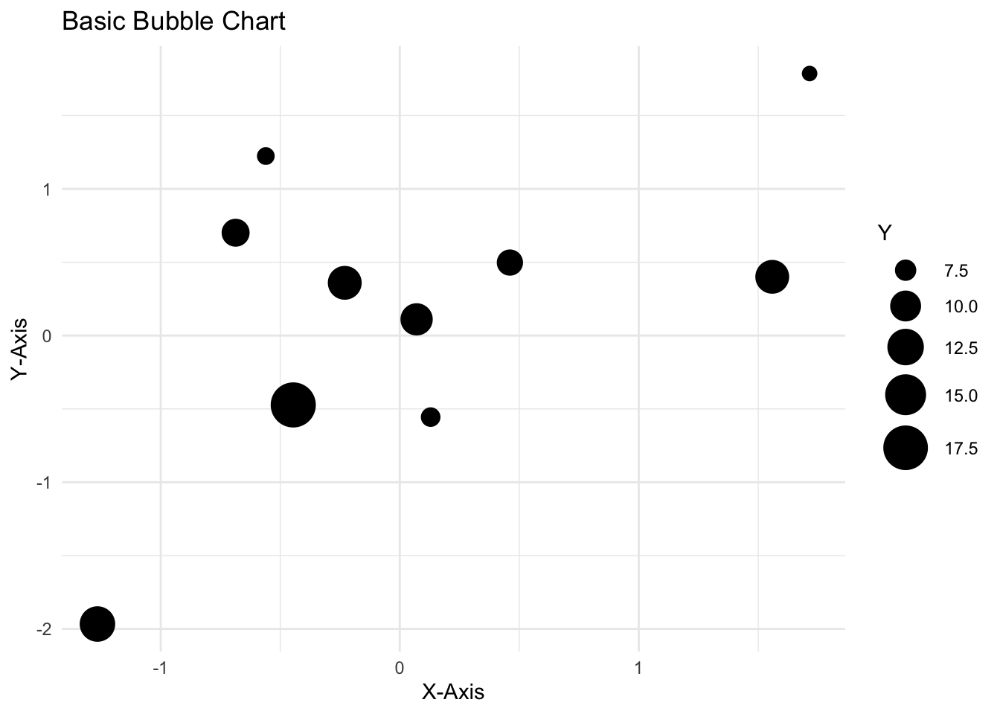

library("vembedr")
embed_url("https://www.youtube.com/watch?v=xtSFXtDf4cM&list=PL9HYL-VRX0oTOK4cpbCbRk15K2roEgzVW&index=6")1 Assignment 1
About Me
Creating Data science Portfolio with Quarto
Dataset
R posts
1.1 About me
Sezgi Ayhan, as an Investor Relations Coordinator, I leverage my 12 years of experience and expertise in capital markets, corporate finance, and ESG issues to communicate effectively with institutional investors and analysts. I aim to enhance the quality of datasets and their visualization in materials presented to investors and conduct an analysis to measure the impact of company disclosures on investors’ decision making process. Most importantly, I seek a deeper understanding of the algorithmic trading and traders’ behaviors.

1.2 Creating Data science Portfolio with Quarto
This is the video I selected from the tutorial collection:
Deepsha Menghani created a blog about herself using quarto, conceptually very similar to this assignment. She designed her page with a navigation toolbar and positioned each sections. She used jolla template in about.qmd to create about page, inserting images and links with icons.. She created projects.qmd and listings with contents of posts which is a directory defined for this blog. She further personalized the page with customized themes and used code tools.
1.3 Dataset
The dataset I’ve selected for presentation on this page is a historical dataset pertaining to the modern Olympic Games. It comprises 15 distinct data variables designed for exploration and analysis.
- ID - Unique number for each athlete
- Name - Athlete’s name
- Sex - M or F
- Age - Integer
- Height - In centimeters
- Weight - In kilograms
- Team - Team name
- NOC - National Olympic Committee 3-letter code
- Games - Year and season
- Year - Integer
- Season - Summer or Winter
- City - Host city
- Sport - Sport
- Event - Event
- Medal - Gold, Silver, Bronze, or NA
Here’s a code that displays athletes who are 10 years old
library(dplyr)
Attaching package: 'dplyr'The following objects are masked from 'package:stats':
filter, lagThe following objects are masked from 'package:base':
intersect, setdiff, setequal, unionevent <- read.csv("./athlete_events.csv")
filter(event, Age == 10) ID Name Sex Age Height Weight Team
1 71691 Dimitrios Loundras M 10 NA NA Ethnikos Gymnastikos Syllogos
NOC Games Year Season City Sport
1 GRE 1896 Summer 1896 Summer Athina Gymnastics
Event Medal
1 Gymnastics Men's Parallel Bars, Teams Bronze1.4 Some R Posts
1.4.1 Pareto Chart
A Pareto chart is a type of bar chart that shows the frequency of different categories in a dataset, ordered by frequency from highest to lowest.
library(qcc)Package 'qcc' version 2.7Type 'citation("qcc")' for citing this R package in publications.#Create a data frame with the product and its count
df <- data.frame(
product = c("Office desks", "Chairs", "Filing cabinets", "Bookcases"),
count = c(100, 80, 70, 60)
)
# Create the Pareto chart
pareto.chart(df$count, main = "Pareto Chart of Product Sales")
Pareto chart analysis for df$count
Frequency Cum.Freq. Percentage Cum.Percent.
A 100.00000 100.00000 32.25806 32.25806
B 80.00000 180.00000 25.80645 58.06452
C 70.00000 250.00000 22.58065 80.64516
D 60.00000 310.00000 19.35484 100.000001.4.2 Bubble Chart
Bubble charts are a great way to visualize data with three dimensions. The size of the bubbles represents a third variable, which can be used to show the importance of that variable or to identify relationships between the three variables.
# Load ggplot2 library
library(ggplot2)
# Sample data
cars <- mtcars
cars$name <- rownames(cars)
# Generate random data
set.seed(123)
data <- data.frame(
x = rnorm(10),
y = rnorm(10),
size = runif(10, min = 5, max = 20)
)
# Create a bubble chart
ggplot(data, aes(x, y, size = size)) +
geom_point() +
scale_size_continuous(range = c(3, 10)) +
labs(
title = "Basic Bubble Chart",
x = "X-Axis",
y = "Y-Axis",
size = "Y") +
theme_minimal()
1.4.3 Creating a List
A list in R is used to gather a variety of objects under one name (that is, the name of the list) in an ordered way. These objects can be matrices, vectors, data frames, even other lists, etc. It is not even required that these objects are related to each other in any way.
# Vector with numerics from 1 up to 4
my_vector <- 1:4
# Matrix with numerics from 1 up to 9
my_matrix <- matrix(1:9, ncol = 3)
library(qcc)
#Create a data frame with the product and its count
office_df <- data.frame(
product = c("Office desks", "Chairs", "Filing cabinets", "Bookcases"),
count = c(100, 80, 70, 60)
)
# Elements of the built-in data frame
my_df <- office_df[1:4,]
# Construct list with these different elements:
my_list <- list(my_vector,my_matrix,my_df)
my_list[[1]]
[1] 1 2 3 4
[[2]]
[,1] [,2] [,3]
[1,] 1 4 7
[2,] 2 5 8
[3,] 3 6 9
[[3]]
product count
1 Office desks 100
2 Chairs 80
3 Filing cabinets 70
4 Bookcases 60